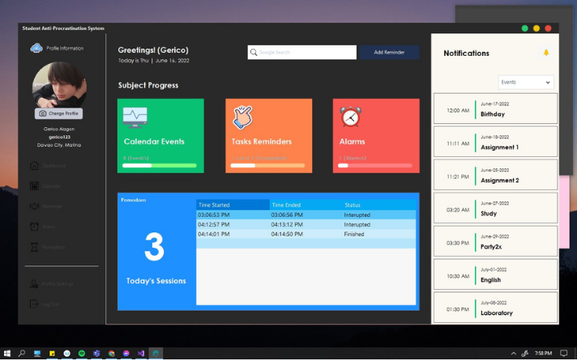
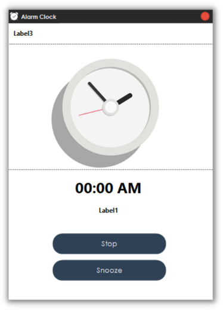
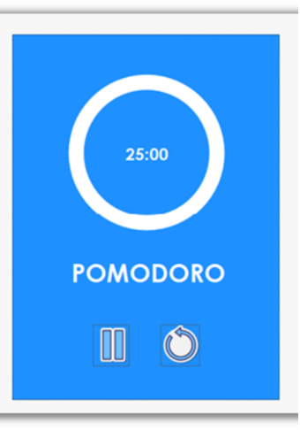
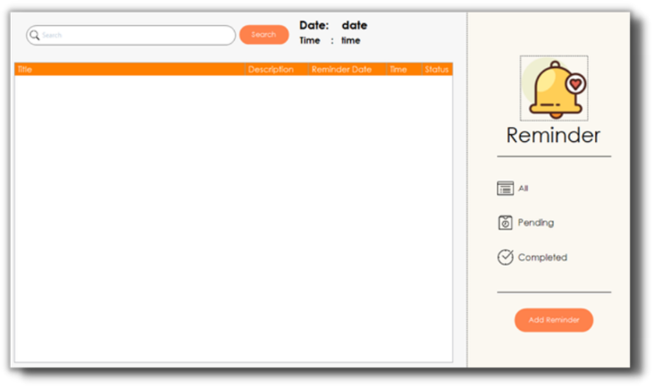
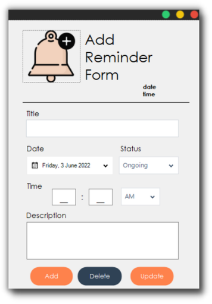
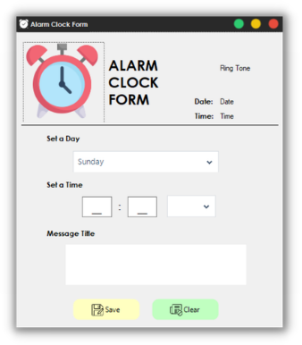

04 · UNIVERSITY PROJECT · PRODUCTIVITY
Anti-Procrastination.
A productivity system designed to help users manage tasks, track deadlines and progress, prioritize responsibilities, and maintain consistent study or work habits.

PRODUCT GOAL
Turn responsibilities into visible progress.
The application brings time, deadlines, reminders, and concentration tools into one personal workspace. Users can see upcoming commitments, review subject progress, plan focused sessions, and return to unfinished work without reconstructing their day from memory.
The interface balances overview screens with dedicated tools so users can move between planning and execution quickly.
FOCUS TOOLS
A practical daily system.
- Dashboard summary for subject progress, calendar events, reminders, alarms, and completed Pomodoro sessions.
- Calendar and notification timeline for upcoming events and deadlines.
- Task reminders with searchable status views for all, pending, and completed items.
- Create, update, and delete workflows for reminders and descriptions.
- Configurable alarm clock with day, time, message, stop, and snooze controls.
- Pomodoro timer with pause and restart controls to support focused sessions.
ATTACHED SCREENS
Productivity toolkit
07 TOTAL FRAMES





